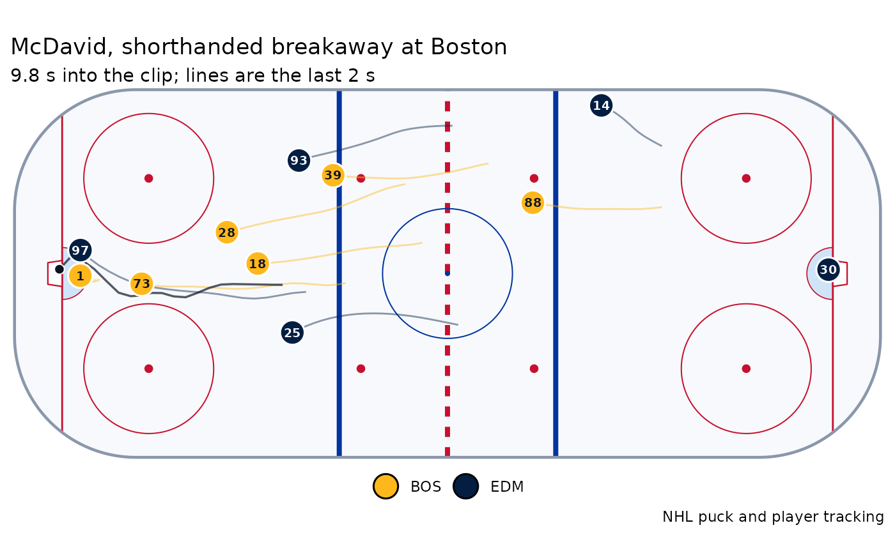

plot_goal() draws every skater, both goalies and the puck at one frame
(by default the moment it went in), each with the path he skated over the
trail seconds before, and the puck's path. plot_goal_sequence() draws
n frames leading up to the goal, side by side.
Usage
plot_goal(frames, frame = NULL, trail = 2, title = NULL)
plot_goal_sequence(frames, n = 6, seconds = 5, title = NULL)Arguments
- frames
Tracking frames from
nhl_goal_tracking().- frame
The frame to draw;
NULLfor the goal (goal_frame()).- trail
Seconds of path behind each player and the puck.
- title
Plot title;
NULLfor the game and event ids.- n
Number of frames.
- seconds
How far before the goal the sequence starts.
Examples
path <- system.file("extdata", "goal-2025020534-777.json.gz", package = "bluelineR")
frames <- read_goal_tracking(path, 2025020534, 777)
if (requireNamespace("ggplot2", quietly = TRUE)) {
plot_goal(frames, title = "McDavid, shorthanded breakaway at Boston")
}
